My3dtiles 0.7.0.20240616
新增功能
- js文件整理，和ui彻底分离，以后可以将My3dtiles的Web版内嵌至用户自己的页面内，而不再需要用通过iframe的方式来引入(20240616)
- 视角集合UI改进，增加了滚动条，优化了一下显示i效果
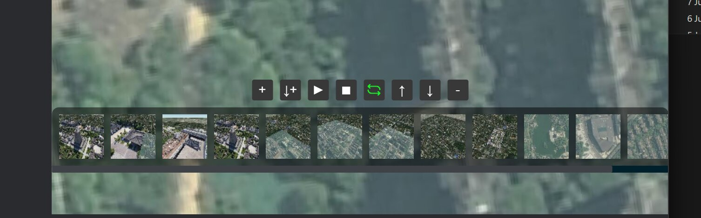
- 视角集合辅助UI上可以显示提示信息，这个提示信息使用的是视角的名字，即视角有名字，光标移上去后就会显示提示信息。
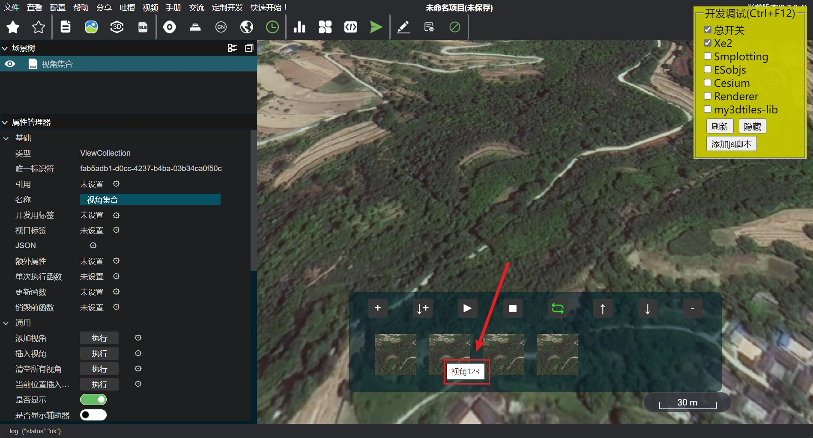
另外，需要注意目前没有专门的地方来设置视角的名字，但是可以在JSON配置项中设置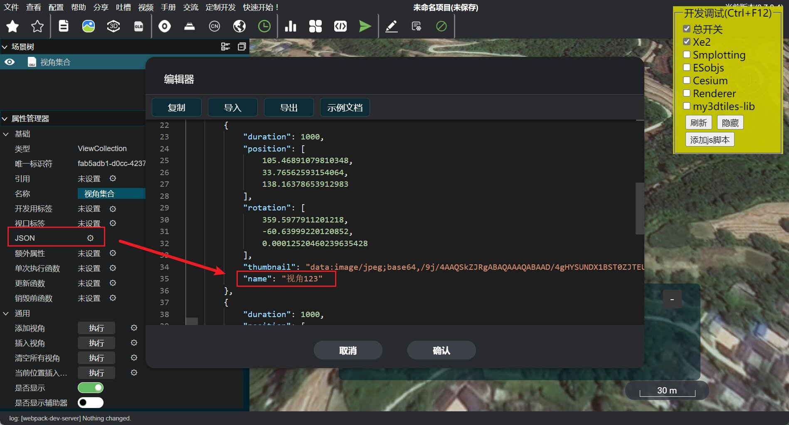
- 视角集合删除当前视角以后，会自动选中下一个视角，这样就可以连续删除视角了。
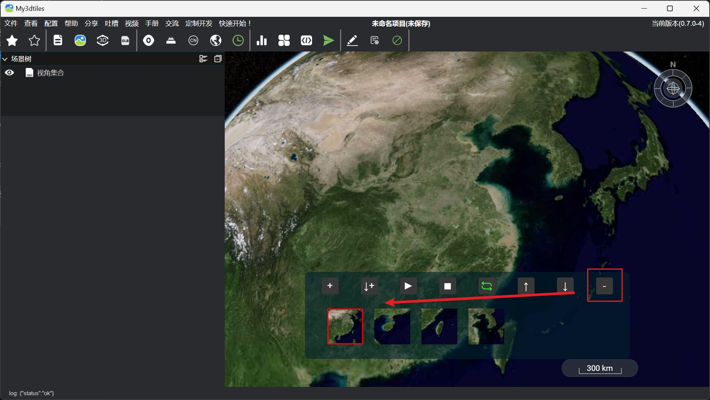
- 资源文件整理(cxy)
- 圆形按钮组、矩形按钮组 支持svg 环境变量、点击后保持高亮状态
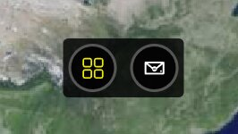
- 增加3dtiles拾取后弹出属性窗口
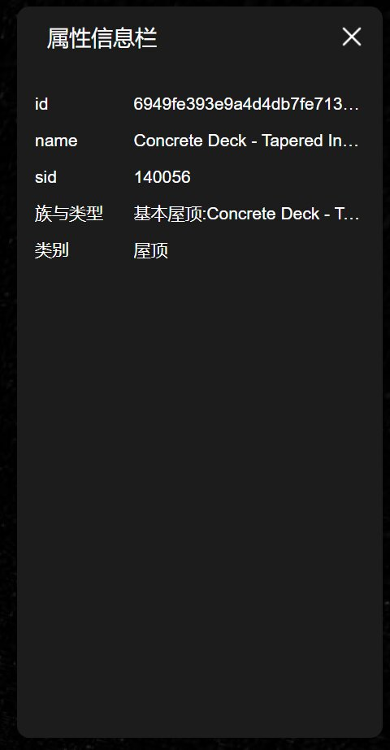
- 播放器的属性设置不再设置成undefined
- 程序关闭前，会提示保存场景
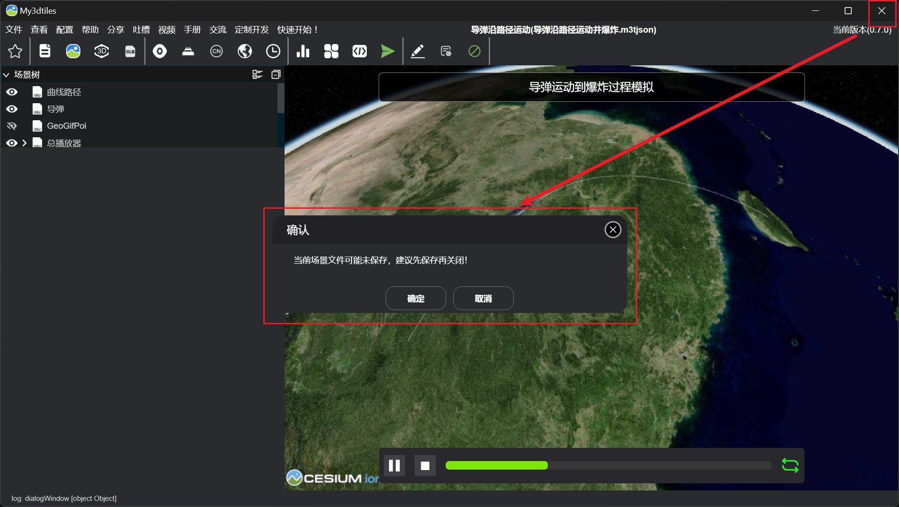
bug修复
- 修复场景对象XbsjModelWithPoi创建即失败的问题(beta4)(20240612)
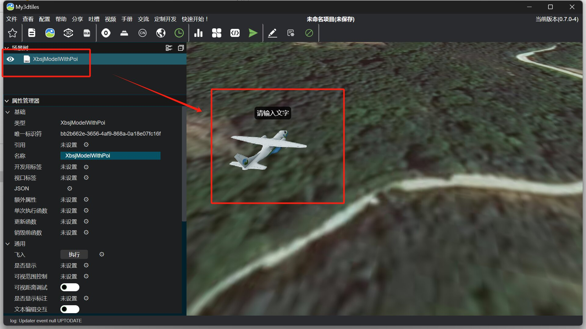
- 修复内置的指南针不能设置css样式的问题(beta4)(20240612)
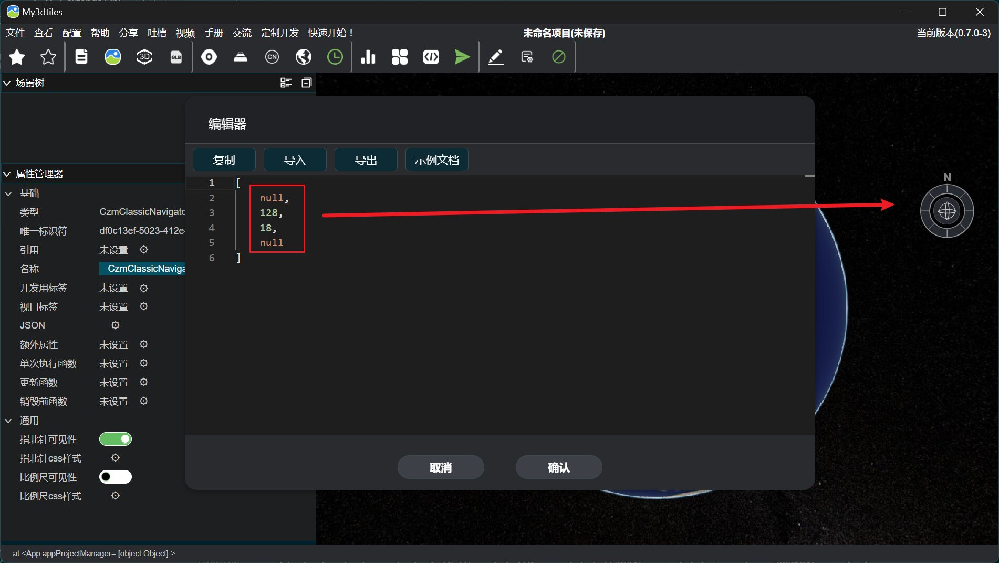
- 修复内置的指南针不能保存的问题(20240608)
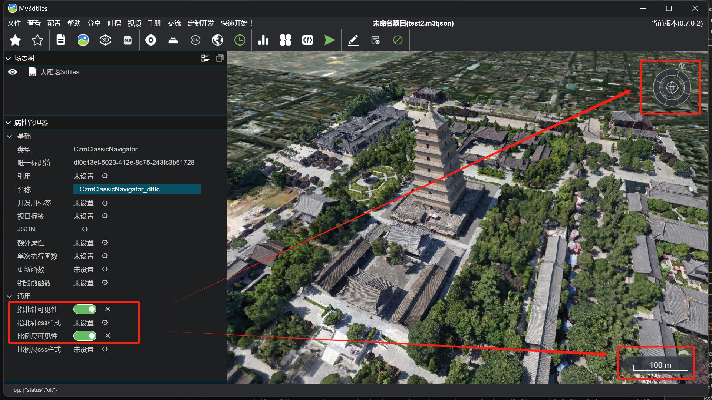
- 修复转化cesium网页时，地形出不来的问题(地形代码在Cesium1.116以上版本以无效)
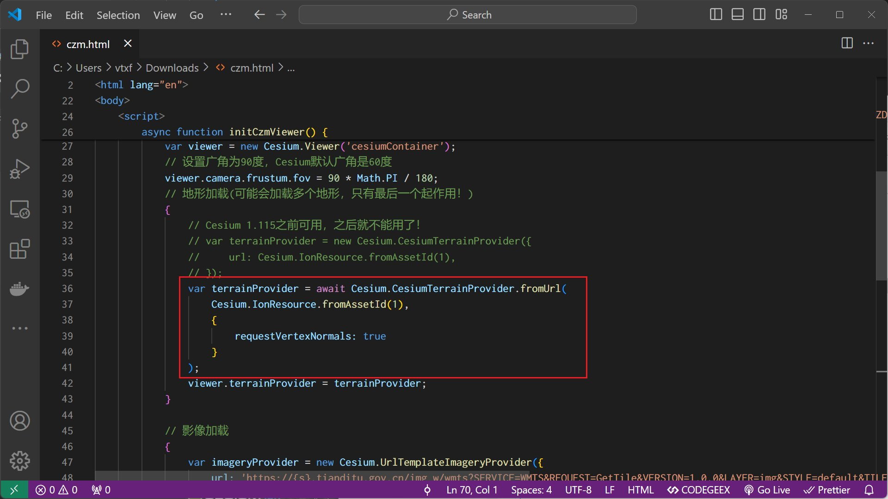
- 修复示例数据大雁塔加载后控制台有报错信息的问题
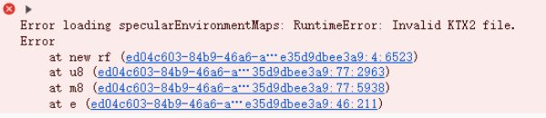
- 修复分类多边形创建时容易拾取到地球背面的bug
- 分类样式classification可以生效
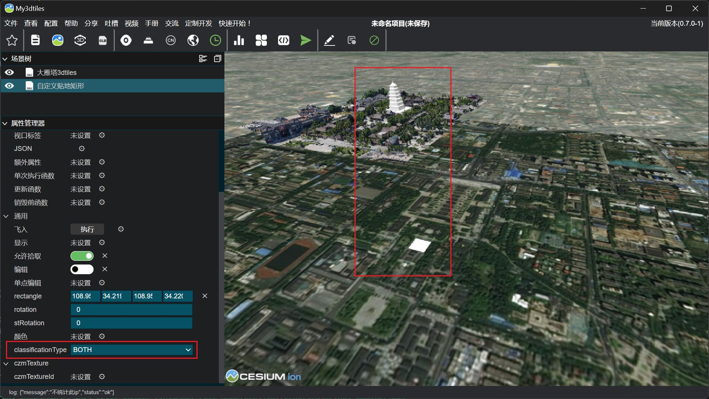
- 修复场景树和属性树子的滚动条问题
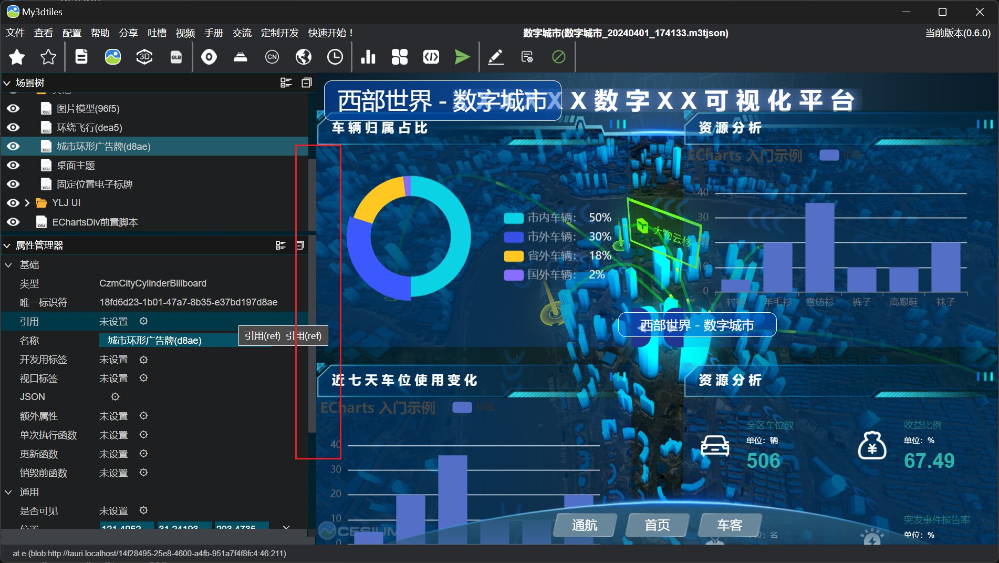
- 修复地理路径相机控制器在启用以后鼠标漫游交互错乱的问题
- 修复地理路径相机控制器的部分属性不能保存的问题
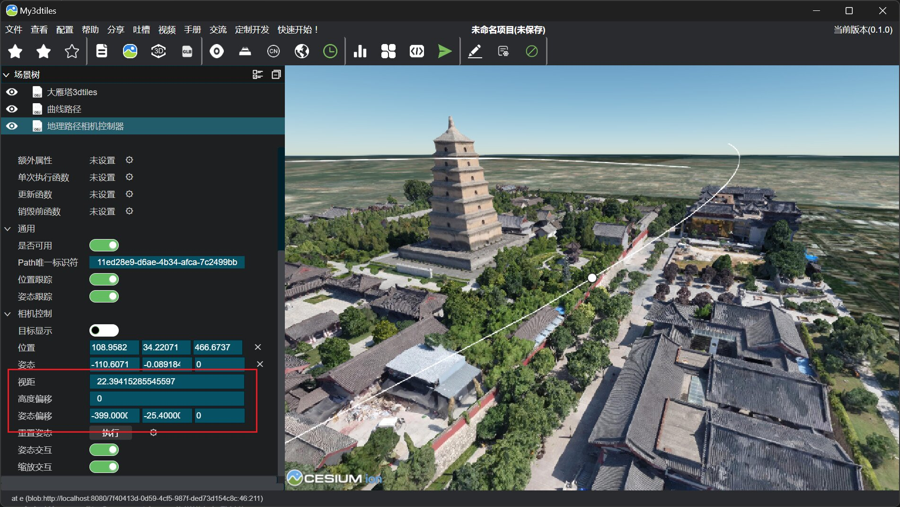
- 修复测量工具栏等移动位置后不能保存的问题(cxy)
- 修复ECharts图表中的折线图表等创建报错不能显示的问题
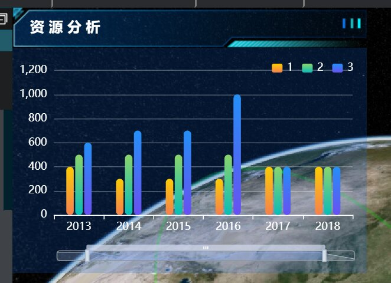
- 修复命令面板中的最近使用对象列表中图表显示位置错乱的问题(cxy)
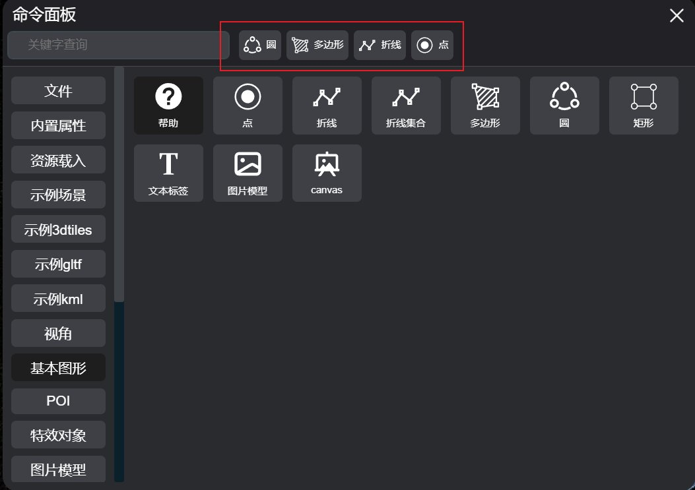
- 修复信号线的heightRatio不起作用的问题
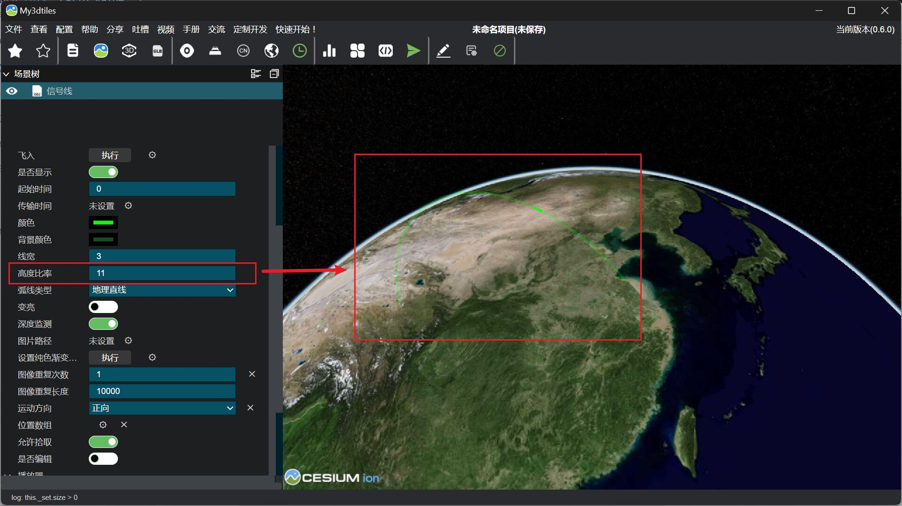
- 合并信号线带考虑加入heightRatio(TODO)
- 修复贴地矩形、热力图区域拾取到的位置点错误的问题
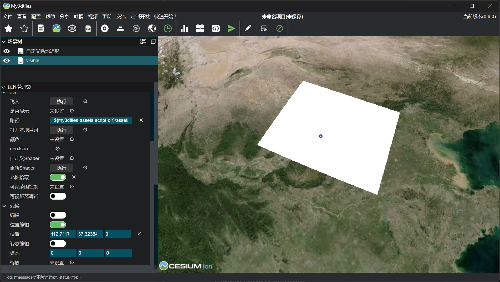
- 修复贴地多边形的拾取位置错乱问题
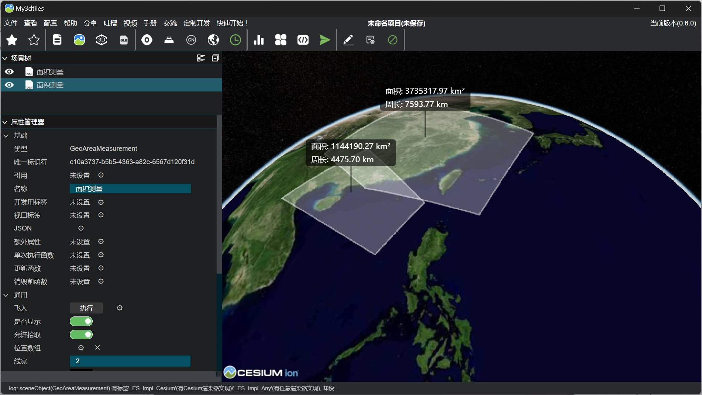
- 视角集合，未开启循环时候，只能上翻不能下翻
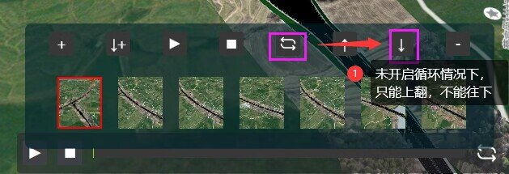